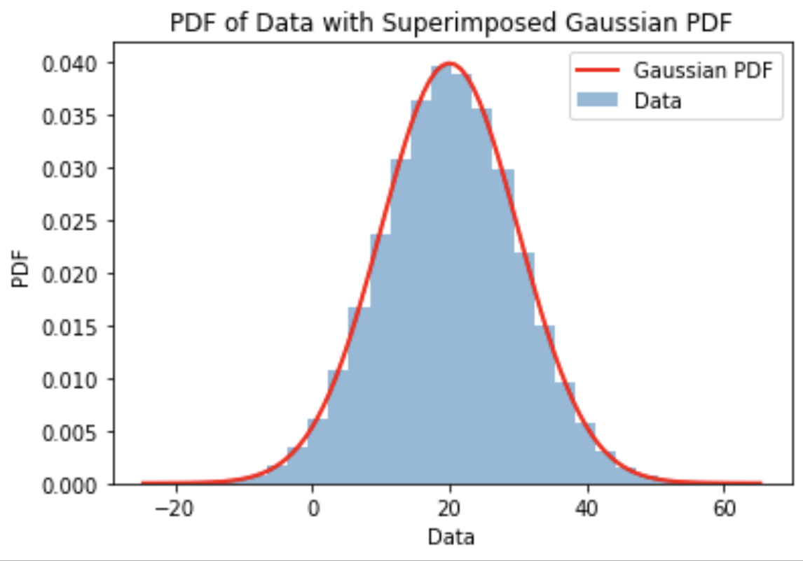
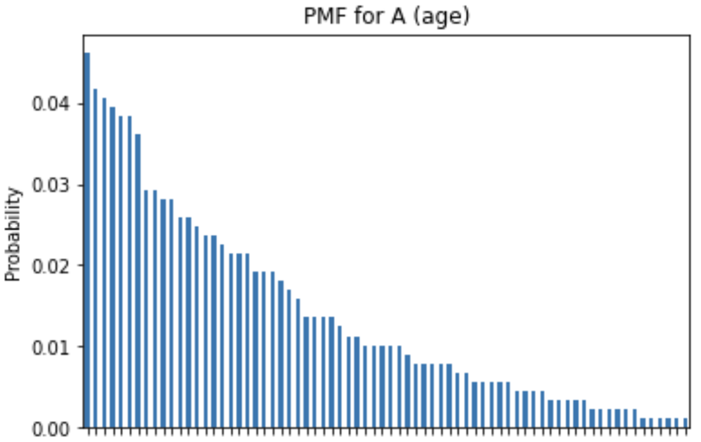
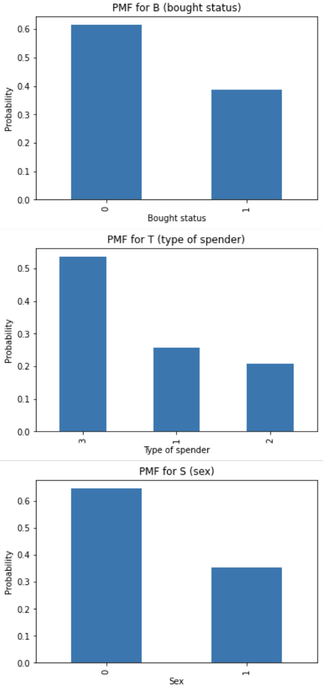
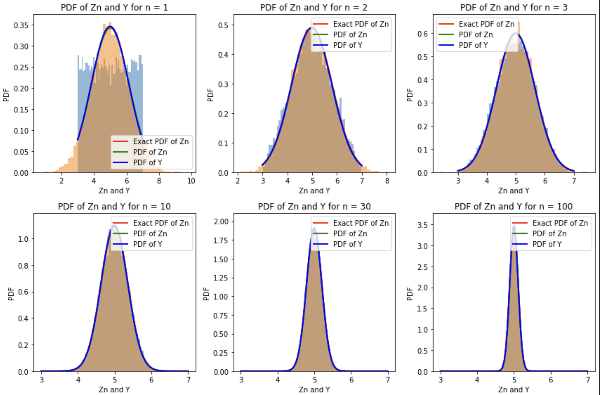

A probability and statistics programming project using Python to simulate random experiments, estimate Gaussian parameters with maximum likelihood estimation, visualize probability distributions, and build a Naïve Bayes classifier.
This project was completed for my electrical engineering probability and statistics coursework. The assignment combined theory, simulation, and data analysis to explore how probability models behave in practice.
I used Python in Google Colab to simulate fair and unfair dice, compare simulated results against theoretical probabilities, estimate unknown Gaussian parameters using maximum likelihood estimation, build a Naïve Bayes classifier, and visualize the Central Limit Theorem through repeated sampling.
The first part of the project used repeated random trials to estimate the probability of rolling an odd number on a 10-sided die. As the number of trials increased, the simulated probability approached the theoretical result.
import random
t_values = [50, 100, 1000, 2000, 3000, 10000, 100000]
for t in t_values:
odd_count = 0
for i in range(t):
roll = random.randint(1, 10)
if roll % 2 == 1:
odd_count += 1
odd_probability = odd_count / t
print(f"{t} tosses: P(odd) ≈ {odd_probability}")Another section estimated the unknown mean and standard deviation of a normally distributed dataset. Using maximum likelihood estimation, the best-fit Gaussian parameters were computed from the observed data.
import numpy as np
data = np.loadtxt("data.txt")
mu_mle = np.mean(data)
sigma_mle = np.sqrt(np.mean((data - mu_mle) ** 2))
print("mu_MLE:", mu_mle)
print("sigma_MLE:", sigma_mle)Placeholder for MLE histogram and fitted Gaussian plot:

The project also included a Naïve Bayes classifier using demographic purchasing data. The classifier estimated probability mass functions and conditional probability mass functions for features like spender type, sex, and age, then used those probabilities to predict whether a user would buy a product.
import pandas as pd
df = pd.read_csv("user_data.csv")
P_B_1 = sum(df["Bought"]) / len(df)
P_B_0 = 1 - P_B_1
P_T_1 = sum(df["Spender Type"] == 1) / len(df)
P_S_0 = sum(df["Sex"] == 0) / len(df)
P_A_lt_55 = sum(df["Age"] < 55) / len(df)
print("P(B=1):", P_B_1)
print("P(B=0):", P_B_0)Placeholder for PMF and conditional PMF plots:


The final part simulated repeated sample means from a uniform distribution and from an unfair die distribution. The plots showed how the distribution of sample means becomes increasingly Gaussian-shaped as the sample size grows.
import numpy as np
import matplotlib.pyplot as plt
from scipy.stats import uniform
a = 3
b = 7
n_values = [1, 2, 3, 10, 30, 100]
t = 10_000
for n in n_values:
X = uniform.rvs(loc=a, scale=b-a, size=(n, t))
Zn = np.mean(X, axis=0)
plt.hist(Zn, density=True, bins=50)
plt.title(f"PDF of Zn for n = {n}")
plt.xlabel("Zn")
plt.ylabel("PDF")
plt.show()Placeholder for Central Limit Theorem plots:

While this was a coursework project, it helped connect probability theory with practical computation. It gave me experience turning mathematical formulas into simulations, visualizations, and classifiers, which is useful for data analysis, signal processing, machine learning, and engineering decision-making.